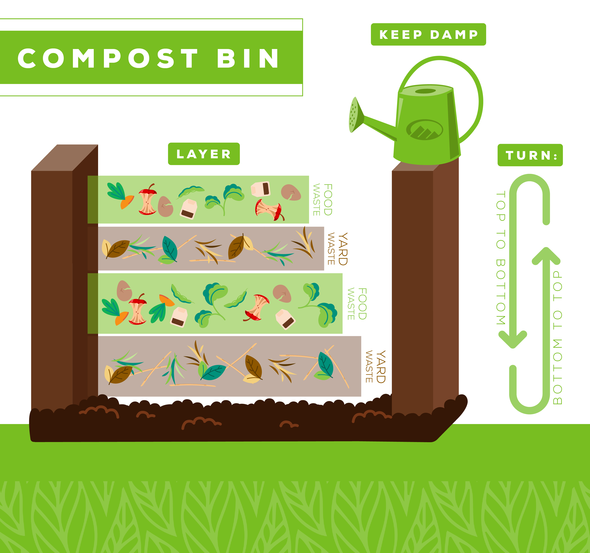

📹 Learn Composting Through Videos & Visuals
Watch our easy-to-follow tutorials and download helpful guides to master composting!
📌 Watch These Short Tutorials
🎥 "How to Start a Worm Bin"
A complete guide to setting up and maintaining your worm composting system
🎥 "How to Make Bokashi - Fermented Composting"
Discover the Japanese method of indoor composting perfect for apartments
🎥 "How to Make Compost - The Simplest Easy Method"
Learn the easiest way to start composting with this beginner-friendly guide
📸 Extra Learning Resources
Composting Timelapse
Watch this comprehensive video displaying composting overtime

Compost Pile Layers
Learn how to layer your compost for optimal decomposition
Composting Bins
Understanding different types of composting bins
📂 Downloadable Guides
Complete Composting Guide
A comprehensive guide to get you started with composting
Download PDF (629 KB)🌿 Learn at Your Own Pace
Watch the videos, study the diagrams, and become a composting pro!